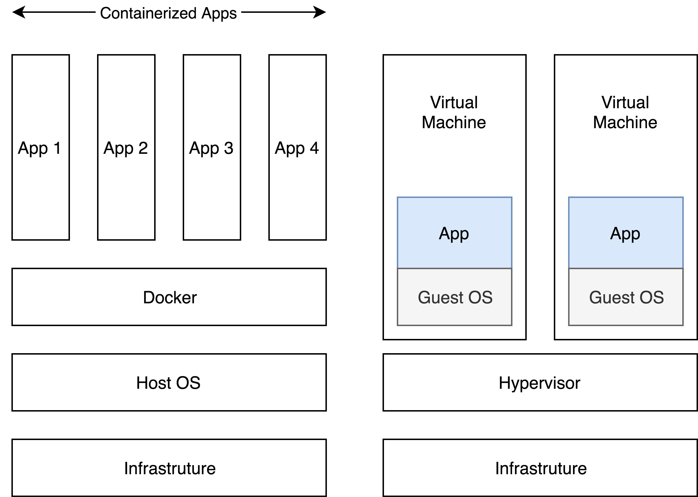

Docker intro and basic command
Generally speaking, Docker remove the hypervisor and guest OS. Unlike virtual machine, Docker container can start running in few seconds while virtual machine has to take minutes to start up. Also, apps running in container would share common resource to reduce resource consumption, such as memory and disk space.
Main Difference Between Docker and Virtual Machine

Docker container does not use hypervisor. The daemon used in Docker is a process that running on host machine. In other words, the application is directly running on the host kernel. By doing so, Docker removes extra middleware cost and save resource usage.
On the other hand, containerized Apps are not so isolated compare to apps running in virtual machine. Virtual machine provides better isolation and has less impact to host machine.
Image
Docker image is a file that relies on host OS kernel. It comprised of multiple layers and used to execute code in a Docker container. Docker image is essentially built form the instruction for a complete and executable application, each instruction would build a layer to current image.
Images are created with the build command, and they will produce a container when
started with run.
Docker images can be pull from Docker Hub. Self-modified image can save in Docker Hub as well.
Container
Container is the instance of image. Image is static after it was built. When image is running, it would create a container as interface so that it can interact with outside environment, no matter communicate with other container, or internet. Like an instance of certain object, container can be created unlimited based on same image, as creating a new object.